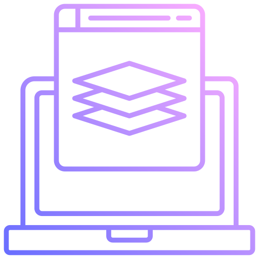

Mis servicios
-

Desarrollo Web Frontend
Me especializo en la creación de interfaces intuitivas y visualmente atractivas. Utilizo tecnologías como HTML5, CSS3, y JavaScript (incluyendo frameworks como React) para construir sitios web que no solo se vean bien, sino que también funcionen a la perfección en cualquier dispositivo.
-

Desarrollo Web Backend
Desarrollo soluciones backend eficientes y seguras utilizando tecnologías como Node.js, Express, y bases de datos SQL y NoSQL. Ya sea que necesites un sistema de gestión de contenido, una API personalizada o una solución de e-commerce, puedo construir la infraestructura que hará que tu negocio funcione sin problemas.
-

Desarrollo Web Full Stack
Si estás buscando una solución completa desde el frontend hasta el backend, ofrezco servicios de desarrollo full stack. Con experiencia en todo el proceso de desarrollo, puedo diseñar, desarrollar y desplegar sitios web y aplicaciones que sean robustas, escalables y fáciles de mantener.
-

Mantenimiento y soporte web
Ofrezco servicios continuos de mantenimiento y soporte para asegurar que tu sitio web se mantenga actualizado, seguro y funcionando sin problemas. Desde actualizaciones de software hasta soluciones rápidas de problemas, me encargo de que tu presencia online siga siendo fuerte y efectiva.